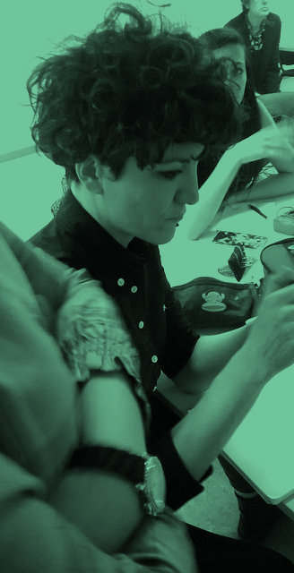

About me
Architect, 34 years old, fablab manager in a science museum since 2013.
MY interests
Design, art, science, technology and education.
I am interested in design, art and science connection. One of my goals at Fab Academy is to investigate that connection through the prototype development of a technology enhancing affection and augmenting awareness in human beings via an artistic language, framework or feedback. The artistic ethos is a fundamental ingredient to shed light on the current intricate relation man-machine. I created the word Advancity to talk about the current human condition toward pervasive technology, scientific discoveries and the liquefaction of borders among disciplinary fields. The more I teach (design and digital fabrication) the more I like teaching.
Career
I worked for 6 years in the field of architecture among Berlin and Milan mainly focusing at the urban scale. I have a strong background as a consultant on how to design, control, address and manage flows of vehicles, goods and pedestrians within urban areas. I have been always interested in computational architecture mainly under its related design culture perspective and I have been author of several articles and essays on this topic. Since 2013 I had a career shift starting working as a fablab manager at the MUSE Science Museum, a brand new cultural and scientific institution in Trento, Italy.